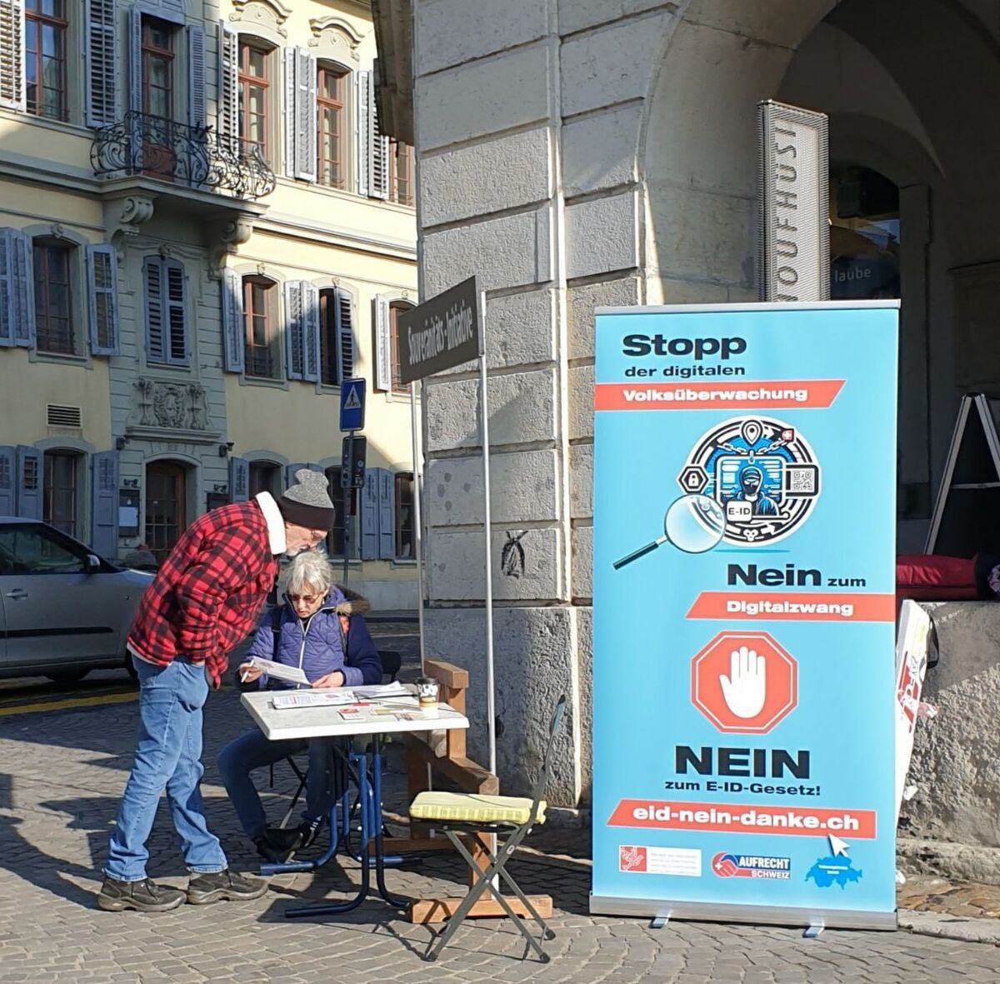
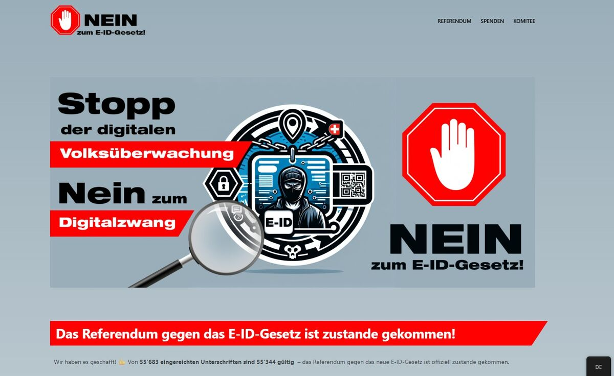
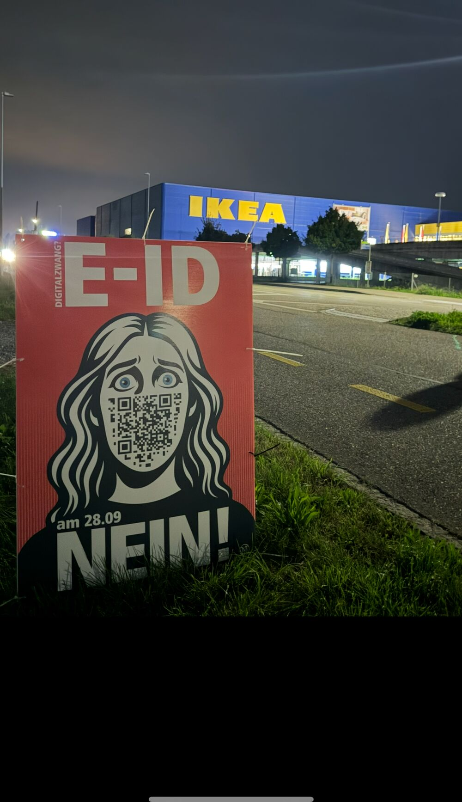
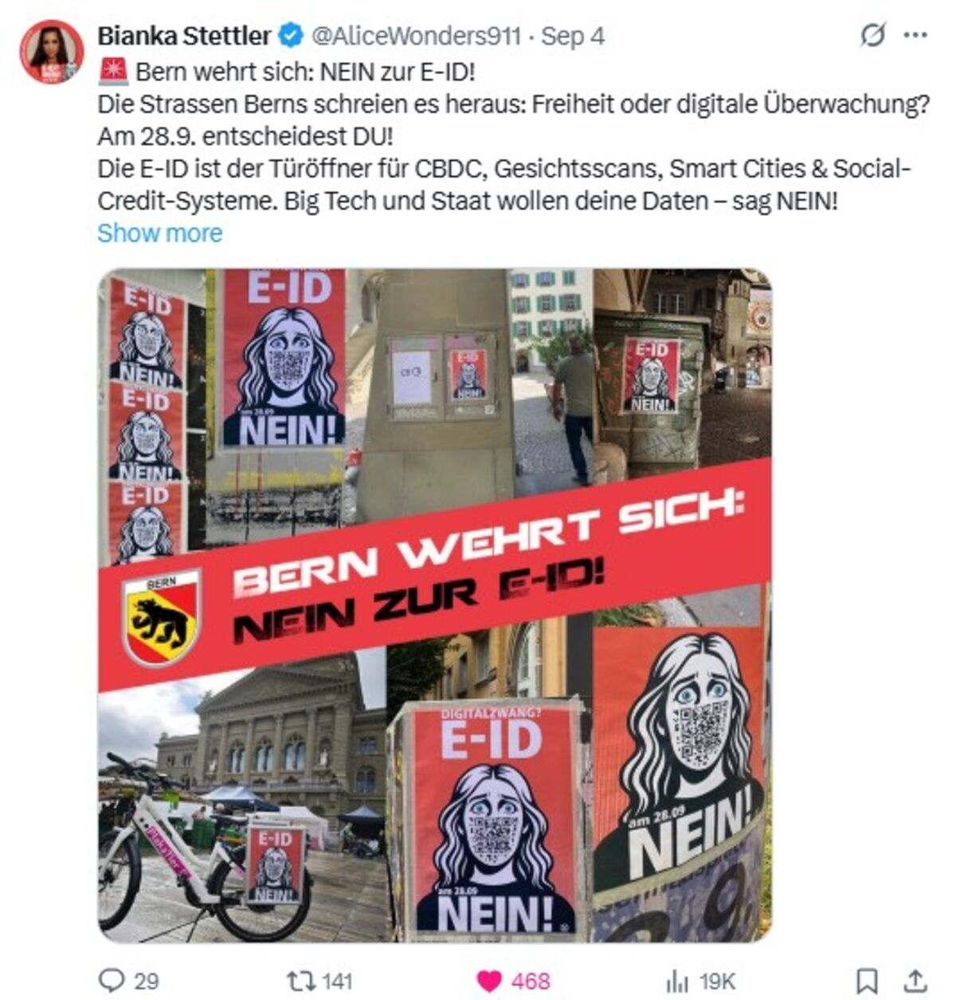
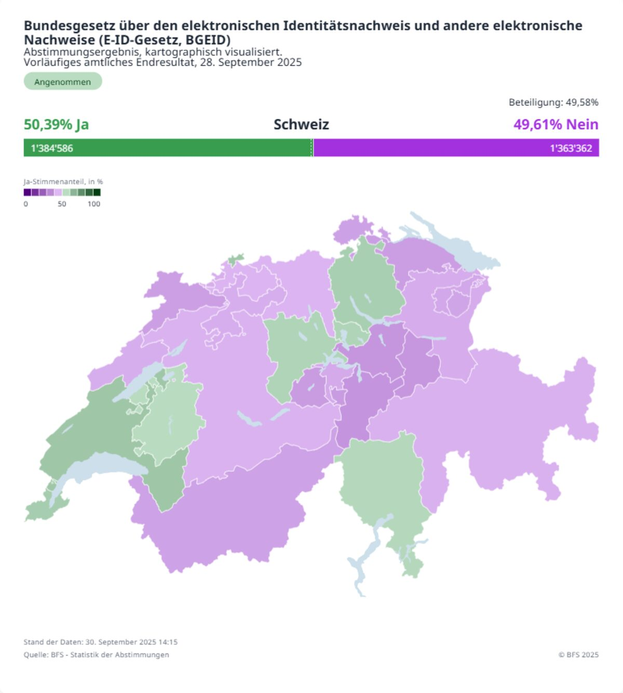

Kampagnenleitung des erfolgreichen E-ID-Referendums — und der anschliessende Kampf für eine saubere Abstimmung, bis vor Bundesgericht.
Kampagnenführung, Leitung digitale & analoge Kommunikation

Konzeption, Aufbau und laufende Betreuung von eid-nein-danke.ch und freiheitskalender.ch sowie redaktionelle Verantwortung, Betreuung und Optimierung für verfassungsfreunde.ch und kamingespraeche.ch.

Als Social Media Manager und Kampagnenführerin steigerte ich die digitale Reichweite erheblich und mobilisierte die Community aktiv. Die Kampagne trug entscheidend zum Rekordergebnis bei — die Freunde der Verfassung sammelten von allen Komitees die meisten Unterschriften (27K). Die Ergebnisse sind im X-Analytics des offiziellen Accounts @FdVerfassung (Nov. 2024 – April 2025) dokumentiert.
Ehrenamtliche Unterstützung der E-ID-NEIN-Kampagne von MASS-VOLL! mit kreativen Guerilla-Aktionen im öffentlichen Raum.



Die eidgenössische Abstimmung vom 28. September 2025 über das E-ID-Gesetz endete äusserst knapp: Mit 50,39 % Ja-Stimmen gegenüber 49,61 % Nein-Stimmen wurde das Gesetz hauchdünn angenommen. Auffällig war die starke urbane Unterstützung in Städten wie Zürich, Basel und Lausanne, während ländliche Regionen mehrheitlich ablehnten. Bereits kurz nach der Auszählung mehrten sich Stimmen, die auf Unregelmässigkeiten, massive Werbeeinflüsse und mögliche Verletzungen der Abstimmungsfreiheit hinwiesen. Das Resultat spaltete das Land — und wurde zum Ausgangspunkt einer juristischen und politischen Aufarbeitung, wie sie die Schweiz seit Jahren nicht erlebt hat.
Meine investigativen Recherchen decken umfassende Unregelmässigkeiten und mögliche korrupte Machenschaften in der Finanzierung des E-ID-JA-Lagers auf. Diese Enthüllungen führten zu Schlagzeilen in führenden Schweizer Medien. Im Zuge dieser Entwicklungen ergänzte die Bewegung MASS-VOLL! ihre bereits eingereichte Stimmrechtsbeschwerde gegen die Swisscom um ein wesentliches Novum. Parallel dazu reichten mehrere Parteien sowie ich persönlich eine eigenständige, umfassende Stimmrechtsbeschwerde ein. Mein Rechtsmittel konzentriert sich auf:
Bei der Analyse der veröffentlichten Spenden stellte ich fest, dass neben der TX Group AG und der Ringier AG auch der Schweizerische Versicherungsverband (SVV) kurz vor der Abstimmung — am 11. September — eine Zahlung von CHF 50'000 leistete. Diese zeitlich auffällige Zuwendung veranlasste mich, bei der Eidgenössischen Finanzkontrolle (EFK) nähere Informationen anzufordern. Die erhaltene Antwort bestätigte meine Vermutung: Es lag ein Rechtsverstoss vor.
Nachdem die erste Instanz die Eingabe aus Kompetenzgründen abgewiesen hatte, reichte ich am 13. Oktober 2025 fristgerecht eine Abstimmungsbeschwerde beim Bundesgericht ein. Erste Rückmeldungen von renommierten Juristen bestätigen die Relevanz meiner Eingabe.
Die Beschwerde deckt schwerwiegende Verstösse auf, die das Abstimmungsergebnis verfälscht haben:
Zusammengefasst: Ein intransparentes Netzwerk aus in- und ausländischen Akteuren bedroht die demokratische Integrität der Schweiz — ein Mehrfachverstoss, der die Nichtigkeit des Abstimmungsergebnisses rechtfertigt.
Dank der Unterstützung zahlreicher Freiheitskämpfer konnte ich mittels Fundraising den Kostenvorschuss von 1'000 CHF am 22. Oktober 2025 begleichen — in kürzester Zeit, ausschliesslich durch Beiträge von Privatpersonen. Dieses Vertrauen und dieses Engagement für Gerechtigkeit bedeuten mir unglaublich viel.
Am 4. Dezember 2025 reichte ich fristgerecht meine Replik zur Vernehmlassung der Bundeskanzlei vom 14. November beim Bundesgericht ein und demontiere darin deren Verdrehungen Punkt für Punkt: unbelegte „Zweifel" an meiner Fristwahrung, die Verharmlosung der wochenlang verschleierten SVV-Spende als „geringfügig" und die Behauptung, ein Resultat mit nur 0,78 % Unterschied sei „nicht sehr knapp".
Mir geht es nicht um parteipolitische Interessen — sondern um die Wahrung demokratischer Grundprinzipien (Art. 34 BV). Die Öffentlichkeit hat ein Recht auf Transparenz, insbesondere wenn finanzielle Einflussnahme die freie Meinungsbildung gefährden kann. Demokratie braucht Menschen, die hinschauen, handeln und Verantwortung übernehmen.
Am 21. April 2026 wies das Bundesgericht in Lausanne nach dreistündiger öffentlicher Beratung sämtliche sechs Abstimmungsbeschwerden gegen die E-ID ab — mit dem denkbar knappsten Verhältnis von 3 zu 2 Stimmen. Die Abstimmung wird nicht wiederholt, das hauchdünne Ja von 50,39 % bleibt bestehen.
Bemerkenswert ist, wie das Gericht zu diesem Ergebnis kam. Die drei Richter der Mehrheit (Thomas Müller/SVP, François Chaix/FDP, Laurent Merz/Grüne) traten auf die zentrale Rüge — die verfassungswidrige Spende der zu 51 % bundeseigenen Swisscom von 30'000 Franken an das Ja-Komitee — gar nicht erst ein. Ihr Argument: eine reine Formalität. Die dreitägige Beschwerdefrist sei verstrichen, weil die Spende bereits Ende August im kaum bekannten EFK-Register „Politikfinanzierung" publiziert worden sei — und nicht erst, als die „NZZ am Sonntag" den Fall eine Woche vor der Abstimmung öffentlich machte. Faktisch verlangt das Gericht damit von jeder Bürgerin, ein staatliches Register laufend selbst zu überwachen, „das kein Mensch kennt".
Auch die weiteren Beschwerden wurden abgewiesen: die verspätet gemeldeten Media-Space-Zuwendungen der Medienkonzerne TX Group und Ringier an die Ja-Allianz — Gratis-Inserateplätze im Wert von rund 80'000 Franken je Verlag, zusammen 163'000 Franken, offengelegt erst zwei Tage vor dem Urnengang, als viele bereits brieflich abgestimmt hatten. Das Gericht befand, private Medien seien nicht zu politischer Neutralität verpflichtet und die verspätete Meldung allein reiche nicht. Ebenso wurde die kurz vor der Abstimmung geflossene, verspätet gemeldete Spende des Schweizerischen Versicherungsverbands (SVV) über 50'000 Franken nicht als ausschlaggebend anerkannt.
Immerhin: Die beiden unterlegenen Richter (Stephan Haag/GLP und Lorenz Kneubühler/SP) hielten fest, die Swisscom-Spende sei „gravierend" und „verfassungswidrig" — sie komme indirekter Behördenpropaganda gleich. Und selbst Staatsrechtsprofessor Andreas Glaser nannte die Urteilsbegründung „sehr überraschend" und „sehr streng". Dass eine Entscheidung von dieser Tragweite an einer knappen Frist scheitert, statt an der Sache selbst, ist demokratiepolitisch mehr als bedenklich — und schafft einen Präzedenzfall, der es Bürgern künftig faktisch verunmöglicht, unlautere Politikfinanzierung überhaupt noch anzufechten.
Nur gut zwei Monate nach dem Urteil hat der Bund die Einführung der E-ID verschoben. Ursprünglich für den 1. Dezember 2026 geplant, kommt sie nun nicht mehr im laufenden Jahr — ein neues Datum nennt das Bundesamt für Justiz nicht. Als Grund werden ausgerechnet Sicherheit und Datenschutz genannt: Neue Herausforderungen durch Künstliche Intelligenz machten Weiterentwicklungen nötig, etwa besseren Schutz vor eingeschleuster Schadsoftware und die Erkennung von Deepfakes beim Ausstellungsprozess.
Ein bemerkenswertes Eingeständnis — denn genau die Sicherheit, deren Mängel die Gegnerschaft im Abstimmungskampf angeprangert hatte, ist nun der Grund für die Verzögerung. Die Vertrauensinfrastruktur soll dennoch bereits im ersten Halbjahr 2027 in Betrieb gehen. Der Kampf um eine sichere, freiwillige und demokratisch legitimierte digitale Identität ist also längst nicht vorbei — ich bleibe dran.
Ich bin offen für spannende Aufträge in Digital, Social Media, Branding, E-Commerce und mehr — let's talk.